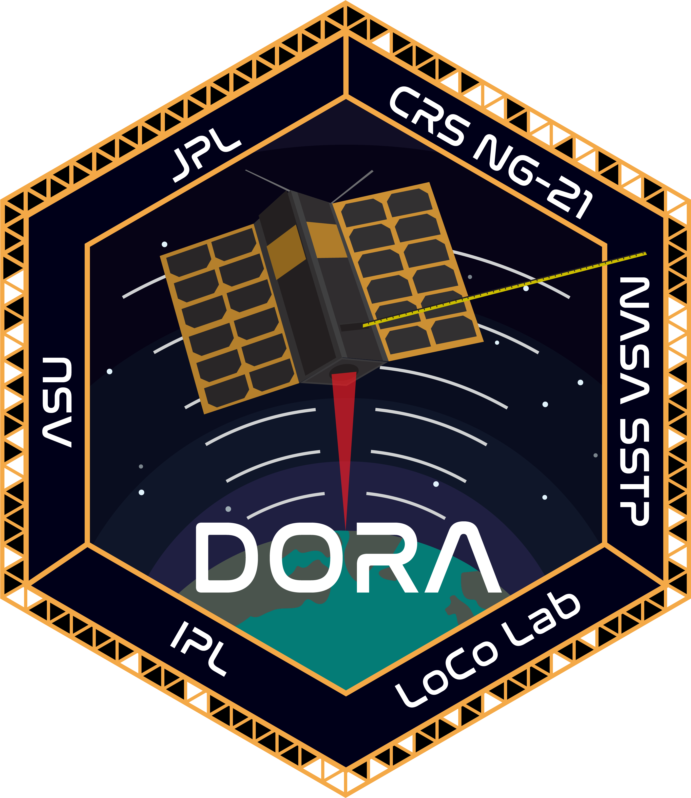

About Us
The ASU Sun Devil Satellite Laboratory (SDSL) is a student-led organization dedicated to the design, construction, and operation of small satellites and space systems. We provide hands-on experience in aerospace engineering, software, and project management, empowering students to contribute to real-world space missions.
Projects
SquidSat CubeSat
SquidSat is a 3u CubeSat that provides a universal satellite CubeSat bus with plug-in-play technology along with flying two other payloads in partner with Luminosity Laboratory and Power Electronics and Energy Conversion Lab.
Learn More.
Coconut CubeSat
Coconut will enable the creation of a communication network between different LoRa devices, allowing remote ground nodes to uplink data to the CubeSat to be downlinked at the ASU ground station.
Learn More.
ASCEND High Altitude Balloon
Arizona Space Grant program designed to engage undergraduate students from the state of Arizona to build, design, fly, operate, and analyze for a full space mission cycle.
Learn More.

DORA CubeSat
Deployable Optical Receiver Aperture - build in partnership with NASA's Jet Propulsion Laboratory.
Learn More.